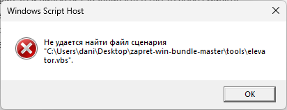

С 3 декабря перестали грузиться видео на ютубе, максимум 1 минуту и перестает. Выходил с профиля ютуб и заходил на другой, в гостевом режиме и с другого профиля все грузит нормально, без проблем. В поддержку ютуб писал, они молчат. Кто-нибудь сталкивался с этой проблемой?
Чем пользуешься? GoodByeDPI, Zapret, Proxy, VPN? Или ничем? Если последнее, то удивительно как он до этого ообще работал столько времени без перебоев.
Сейчас пользуюсь сборкой YTDisBystro v2.4, до этого пользовался v2.0, v1.1.
Хм, по всей видимости твой оператор что-то нахимичил. Можешь попробовать поискать стратегии для googlevideo с помощью blockcheck или прописать wssize в конфиге (в крайнем случае)
А это где и что менять? Не разбираюсь в программе вообще  , просто скачал и пользовался.
, просто скачал и пользовался.
Примерно так - ТЫК
Да.
Была ещё тема с обсуждением проблемы OgQIAxAK, но её модераторы потёрли по неизвестной причине. Перескажу содержание: по прошествии минуты проигрывания видео в браузере в инструментах разработчика можно было увидеть ответ от googlevide.com в виде OgQIAxAK вместо куска видео. Предлагались варианты использовать chromium-based браузеры, разблокировать домен jnn-pa.googleapis.com. Мне разблокировка домена не помогла, а проблема сама пропала через недели две.
после выполнения третьего пукнта:
когда я зупаскаю blockcheck.cmd, вылезает вот такая ошибка:

Дело не в обходе и не в стратегии. Это бан от гугла. Смотрите видео без логина в другом браузере, комментируйте в том, где залогинены.
Другого способа пока никто не нашел.
В Быстро он давно разблокирован, так же как и сигналер. Но дело не в них
А можно ли где-то посмотреть на сколько бан дали или он “теневой”?
Да, я так и написал. У меня проблема пропала сама без каких либо действий с моей стороны и уже три месяца не появляется (учётки в ютубе нет, jnn-pa.googleapis.com заблокирован в uMatrix).
Зачем гугол баны дает?
Борятся со сторонними приложениями для просмотра видео без рекламы.
Теневой. На сколько его дали, я не знаю. Знаю, что такое часто происходит в местах, о которых гугл не хочет признавать, в какой стране они сейчас находятся.
Может юбуст поможет, все же впн
У меня различные проксификации через разные локации никак не влияло на ошибку. OgQIAxAK выходил и на европейских и на американских GGC (хранилище разумеется чистилось, fingerprint менял, блочился конкретно firefox).
К сожалению, впн тоже не помогает. Придется пользоваться другим аккаунтом тогда и ждать разбана. Спасибо за помощь, @xX_RUP3R7_P4UL50N_Xx, @Xunlei, @KDS.
Посмотри в инструментах разработчика в сетевых соединениях что выдаёт обращение к googlevideo.com через минуту.
А как сделать обращение и что именно нужно показать?
Обращение делает сам скрипт ютуба который закружает куски видео во время воспроизведения. Мне интересно какое содержание Response последнего обращения к googlevideo.com перед прекращением воспроизведения видео.
Мне часто теневые баны выдавали, мои сообщения небыли видны не на 1й трансляции, проверял на другом включеном браузере, потом дня через три теневой бан снимали.
Это проблема 59 секунды.
Типа теневой бан от гугла. Со временем исчезает, появляется. У меня сейчас снова эта хрень, уже второй раз на месяц.
Смотри юпуп без учетной записи - так работает.
У меня тоже такая беда случилась где-то недели две назад и вроде до сих пор есть.
Мне помогло (помимо ВПН) добавление jnn-pa.googleapis.com в список проксируемых Censor Tracker. Если что, у меня там проксируется немного сайтов, которые не пересекаются с блэклистом Запрета, поэтому работают оба одновременно и не мешают друг другу.
я не пойму а смысл банить ру аккаунты у нас как бы все равно рекламы нет
Скорее всего это автобан. Видимо так настроили скрипт. Может ему не нравится геолокация, да много причин, на самом деле.
Да. Это решение проблемы. Достаточно только проксировать jnn-pa.googleapis.com.
Проверил, работает.
NPV не нужон.
Установи цензор трекер.
Добавь в проксирование jnn-pa.googleapis.com
Все заработает как и раньше. Профит.
К сожалению, теневой бан на загрузку видеороликов пропал, но появилась новая. Не могу загрузить видео на ютуб, сначала подумал что дело в видеокодеке AV1, но нет, видео записанные с помощью HEVC’a тоже не загружаются, уже где-то полчаса видео висит на 0% загрузки. Думал дело в теневом бане, но и на другом аккаунте та же самая проблема.
Спасибо, @madamretto, @manwithbox, добавил.
Видимо, заблочен upload - уберите его из netrogat.txt
…в стране где он убрал рекламу
Ещё раз повторю: у меня проблема возникала при просмотре без входа в учётную запись, с полной проксификацией, без зависимости от страны и GGC.
Раз упомянул то сознаюсь что у меня тоже какие-то странные “выкиды” без ошибок были в newpipe, а он как раз без аккаунтовый фронтэнд. Когда перешел в smarttube, фротэнд с аккаунтом, то все видео были стабильные. При том что yt-dlp как был стабильным так и остался. Через yt-dlp кстати очень хорошо старагегии подбирать, там сразу видно сколько репитов нужно для стабилизации
Спасибо, помогло.
С утра словил проблему 59 секунды! Проксирование jnn-pa.googleapis.com через ценхор трекер не помогло. Что в своём акке, что выйдя из него всё одно не даёт, при том что со стороннего плеера нормально всё.
Странно. У меня помогло. Еще нескольким людям с разных сетей подключил трекер - работает у всех.
Если запущен запрет, посмотри в хостлистах, если там есть этот домен - удали. Скорее всего перекрывает.
удалял, - это тоже не помогло! (. Даже пвн не лечит эту дичь.
Очень странно. Очень.
Потому как проблема только в этом домене, он регулярно чекает таймлайн и записывает в профиль. Проксирование абсолютно точно должно решать.
Так что это абсолютно твоя локальная странность, может на компе что-то мешает.
Посмотри в логе, может быть еще какие домены возвращают ошибки при загрузке страницы, попробуй их тоже проксировать.
мож он в адблоке у тебя блокируется?
открой в приватной вкладке видео для проверки.
а в приватной норм всё! Бред какой-то! Это при том, что я ублок вообще отключал. В общем даже когда ублок сношу вообще всё одно упирается в минуту! (
{kind=link}
{kind=link}
Вот эта шляпа всё портит!
P.S. Теперь и в приватном тоже самое! Видимо оно не может пробиться кудато(
Сам айпишник этот пингуется
сброс кэша не помогает?
я у себя недавно заметил, что начали прилетать 403 ошибки от левых серверов, помог сброс кэша куков и прочего. правда таких блокировок как у тебя не было
кэш почистил, - нифига! (. Мдаа
хз, у меня нет идей больше
айпи странный . youtube.com тоже в 173…резолвится?
64.233.165.136
Присоединяюсь к вопросу. Минута и виснет. Смена браузера, чистка кэша, выход из аккаунта, добавление jnn-pa.googleapis.com в censor tracker никаких результатов не дали. С впн работает с того же аккаунта. При этом в тот же момент интерфейс и превьюшки заработали без каких либо методов обхода.
А у меня вот пару дней как другая проблема появилась - не важно, под своим аккаунтом или нет, с любой версией Запретов и т.п. (кроме ВПН - с ним всегда все работает), рандомно любое видео (особенно если запускать его с Главной страницы ютуба), приводит к этому:
{kind=link}
То есть секунд 10-15 страница выглядит так, а потом видео все же загружается. Блокировка каких-либо rr1 и т.п. ничего не дает. Помогает запускать видео в новой вкладке, а не на этой же, либо если сразу перезагрузить страницу.
Ничего у себя не меняла, это просто в один день начало случаться. В ошибках кода страницы ничего особо и нет, тем более что случается это с 20% видео совершенно рандомными, а не со всеми.
Попробуйте себе в хостлист добавить pki.goog
Нет, не помогло. Пробовала и разные листы, разные сборки и даже в Цензор добавить (ну всякий) - ничего.
Тот же прикол. Но у меня срабатывает реже, где-то раз в час вот так виснет.
Вообще, у меня недавно была один-в-один такая же проблема. Проявилась в то же время, что и недавние проблемы с рутрекером. Я много чего пробовал, в итоге всё решилось когда включил-выключил ipv6. Но, мне кажется, это просто совпало, и чем реально была вызвана проблема - хз. С тех пор пока всё норм.
У меня такие подвисы начались неделю назад и с каждым днём становились всё продолжительнее во времени. Сейчас может до 20-30, а может и более секунд доходить, но если обновить, то сразу норм, но через 59 сек - конечная! Концлагерь какой-то )
Обычно у меня вот с видосами на главной странице или с теми, что в плейлисте “Смотреть позже”. Если смотрю плейлист с каким-нибудь прохождением, то вообще нет проблем, когда нажимаю “следующее видео”. По времени не могу сказать, но если каждый раз заново открывать на вкладке главную страницу ютуба, то почти всегда любое видео, нажатое первым, будет вот с такими приколами.
@Ori ноуп( Остается только ждать и надеяться, что пройдет так же, как появилось. Уже подустала, если честно, от того, что каждый день почти ожидаешь проблем с этими блокировками и танцов с бубнами, и хуже всего, когда тратишь кучу времени, а не помогает. Эх…
Перезапустил браузер за неделю и получил эту проблему (в ответе загрузки чанка 89 байт), теперь приходится смотреть в вивальди.
Удалял Ублок, выходил из аккаунта, не помогает, запускал ютуб в эдже, там вообще не грузит почему то, в итоге зашел в другой аккаунт на ютубе и заработало, начало дальше 0:59 грузить.
Я юзаю YTDisBystro 2.2, так же работало нормально и постепенно начало ухудшаться и в конце прошлой недели вообще перестало нормально работать, так же на видос переходишь, там где остановился грузит минуту, можно смотреть, а дальше - буй, мотай не мотай, обновляешь страницу и всё тоже самое.
Через впны халявные очень плохо работало, они в целом тугие, но неприятно через них смотреть в низком качестве.
А 2.4 пробовали? Или проблема решилась и без обновления?
Сейчас многие провы включают сами ютуб. Включайте квик в браузере, пробуйте разные варианты, отключайте временно обход. Провы не шарят как правильно включить тот же ютуб и делают это через задницу. По итогу с их включением работает ютуб галимо. на половина устройств вообще не работает, до их вмешательства было намного лучше, поэтому если вы заметили что что то изменилось в худшую сторону, то возможно ваш пров включил ютуб и радоваться не стоит, работать он будет хреново )
Просто эти полудурки каждый день там что то настраивают, имею введу прова и сегодня вы вроде стабилизировали, а завтра они снова что то изменят и у вас опять перестанет нормально работать и как я понял, они там каждый день что то меняют. Там просто сидит какой то лыган и играется с параметрами, хозяин дал ему добро, сказал включи, а тот рад стараться
Ща скачал 2.4 версию, на 2.2 первая загрузка страницы ютуба долго грузилась, а потом нормально подгружало видос, с 2.4 грузит сразу без затупов, спасибо)
Столкнулся с этой проблемой, причём я не использую запрет или гудюбайdpi, а просто впн. Никак не хотело работать в режиме прокси, останавливалось на 59 секунде, пока не включил TUN режим и всё заработало. Всё дело было в UDP трафике похоже
Пробуйте пока то что нашлось здесь
На данный момент по крайней мере в анонимном режиме проблему одной минуты вызывает неработоспособность jnn-pa.googleapis.com (ошибка 403/CORS Failed):
Тоже столкнулся с этой проблемой, она то появляется то исчезает сама по себе. Во время остановки видео в консоли идёт повторяющийся сбоящий запрос к jnn-pa.googleapis.com. Происходит это независимо, как с аккаунтом так и без на абсолютно разных машинах.
Но мне почему-то помогает 1 - 2 раза обновить страницу, чтобы прогрузка видео преодолела 1 минуту.